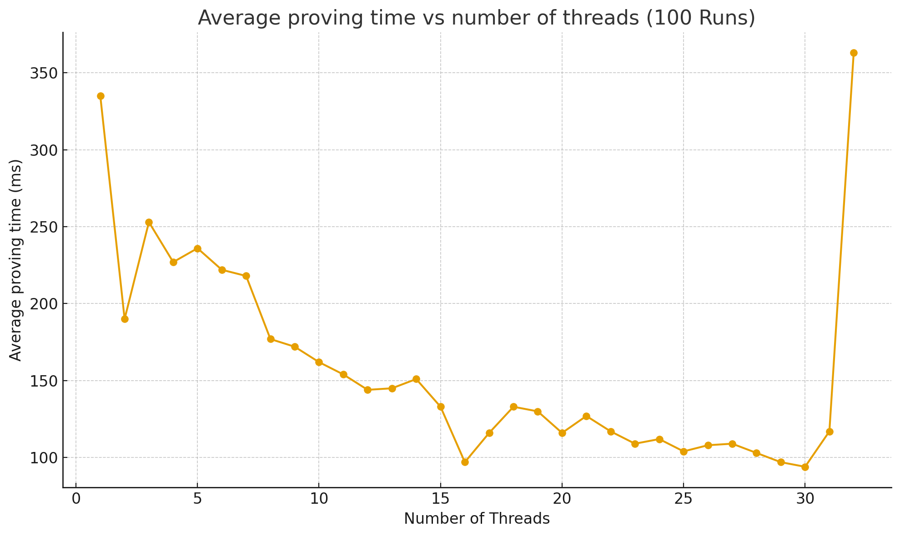

MANTLE
| Field | Value |
|---|---|
| Name | Mantle |
| Slug | 98 |
| Status | raw |
| Category | Informational |
| Editor | Thomas Lavaur thomas@logos.co |
| Contributors | David Rusu davidrusu@logos.co, Filip Dimitrijevic filip@logos.co, Marcin Pawlowski marcin@logos.co |
Timeline
- 2026-08-27 —
48fbc82— docs(blockchain): order channel configurations and prevent their replay (#396) - 2026-08-26 —
5a9bee0— docs(blockchain): make execution steps clearer (#417) - 2026-08-24 —
8b6f4f4— docs(blockchain): use one canonical encoding for ServiceType and Locator (#402) - 2026-08-11 —
91e5486— docs(blockchain): assert all inputs to be non empty (#399) - 2026-08-07 —
4c22190— docs(blockchain): require checked arithmetic in Mantle spec (#369) - 2026-08-05 —
b4388aa— docs(blockchain): round the leader reward share down and align the voucher DST (#395) - 2026-07-27 —
628684e— docs(blockchain): fix CHANNEL_DEPOSIT execution, block limits and storage market formatting (#381) - 2026-07-20 —
5b20a2d— docs(blockchain) Channel Participation in PoS (#364) - 2026-07-09 —
18c373b— docs(blockchain): Factor out multiple Ed25519 threshold verification and validate configuration threshold (#367) - 2026-07-03 —
709cf7f— Bedrock-RFC: Remove Concept of a Session (#365) - 2026-05-28 —
d45eed2— Chore: mirror blochain specs into github/mdbook (#347) - 2026-05-18 —
58b5698— chore(blockchain): migrate contributor emails to @logos.co (#338) - 2026-01-19 —
f24e567— Chore/updates mdbook (#262) - 2026-01-16 —
89f2ea8— Chore/mdbook updates (#258)
Revisions History
| Version | Changes | Date |
|---|---|---|
| 1.1.0 | Initial revision. | 2026-12-01 |
| 1.2.0 | Removed DA references. Removed notions of Sovereignty and Rollups and used Zones for simplicity. Removed Nomos from specifications and DSTs. Added bridging and decentralized sequencing for channels. | 2026-01-01 |
| 1.2.1 | [RFC] Improve Mantle Transaction hash. | 2026-03-25 |
| 1.3.0 | [RFC] Make Ledger Transaction an Operation. | 2026-04-02 |
| 1.4.0 | [RFC] Enforce NoteId uniqueness. | 2026-04-24 |
| 1.5.0 | [RFC] Simplify Mantle Transaction and Refactor Ledger Operations. | 2026-05-06 |
| 1.6.0 | [RFC] Remove Concept of a Session | 2026-06-22 |
| 1.7.0 | Factor out the multi eddsa threshold verification and added a validation step in channel config to check the new config threshold is lower or equal than the number of accredited keys | 2026-06-25 |
| 1.8.0 | [RFC] Update channels to support proof of stake participation and test vectors for OpId and Mantle Transaction Hash | 2026-07-06 |
| 1.9.0 | Update the execution of CHANNEL_DEPOSIT to consume the inputs and recreate them in the channel, updating their NoteId avoid replay attacks in case of withdraw after a deposit | 2026-07-27 |
| 1.9.1 | Rename the excess balance left after the mandatory fees into tx_priority_tip and convert it back into a TokenValue explicitly | 2026-08-05 |
| 1.9.2 | Required checked arithmetic for all token value, balance, gas, and fee computations. | 2026-08-06 |
| 1.10.0 | Enforce non empty inputs for every operation not only transfer moving the assertion in the validation of input spendability | 2026-08-11 |
| 1.10.1 | [RFC] One canonical encoding for ServiceType and Locator: ServiceType is its one-byte discriminant and Locator is the multiaddr binary form. Added a declaration_id test vector | 2026-08-14 |
| 1.10.2 | Precise the state validation reads: the Operations of a Mantle Transaction are validated and executed one after the other in the order they appear, each against the state the preceding ones left, and a Mantle Transaction against the state the transactions preceding it in the block left. Accumulated the transaction balance along that pass, replacing get_transaction_balance | 2026-08-24 |
| 1.11.0 | Track the configuration lineage of a channel: ChannelState gains config_tip_hash and the CHANNEL_CONFIG payload carries the parent configuration it extends, ordering configurations and preventing their replay | 2026-08-27 |
Introduction
Mantle is a foundational element of Bedrock, designed to provide a minimal and efficient execution layer that connects together Bedrock Services in order to provide the necessary functionality for Zones. It can be viewed as the system call interface of Bedrock, exposing a safe and constrained set of Operations to interact with lower-level Bedrock services, similar to syscalls in an operating system.
Mantle Transactions provide Operations for Zones and blockchain Services to interact with Bedrock. For example, a Zone sequencer posting an update to Bedrock, or a node operator declaring its participation in the Blend Network, would be done through the corresponding Operations within a Mantle Transaction.
Mantle manages assets using a note-based ledger that follows an UTXO model. Each Mantle Transaction can include Transfer Operation, and any excess balance serves as the fee payment.
Overview
Mantle Transaction
The features of the Logos Blockchain are exposed through Mantle Transactions. Each transaction can contain zero or more Operations. Mantle Transactions enable users to execute multiple Operations atomically: the Operations are applied one after the other in the order they appear, and either all of them take effect or none does.
Mantle Operations
Logos Blockchain features are exposed through Mantle Operations, which can be combined in a single Mantle Transaction and executed atomically. These Operations enable transfers and functions such as on-chain data posting, Cross-Zone interactions, SDP interaction, and leader reward claims.
Mantle Ledger
The Mantle Ledger enables asset transfers using a transparent UTXO model. While a Transfer Operation can consume more tokens than it creates, the Mantle Transaction excess balance must exactly pay for the fees. The ledger tracks three kinds of notes: regular notes, locked notes (collateral for service declarations) and channel notes (channel bridge funds eligible for PoS participation only).
Transaction Fees
Mantle Transaction fees are derived from a gas model. The Logos Blockchain has two different gas markets, accounting for permanent data storage, and execution costs. Each Operation has an associated Execution Gas cost. Users can build unbalanced Mantle Transactions to tip the leaders and incentivize the network to include their transaction.
| Gas Market | Charged On | Pricing Basis |
|---|---|---|
| Execution Gas | Operations | Fixed per Operation |
| Permanent Storage Gas | Signed Mantle Transaction | Proportional to encoded size |
Mantle Transaction
Mantle Transactions form the core of Mantle, enabling users to combine multiple Operations to access different functions. Each transaction contains zero or more Operations. The system executes the Operations atomically, while using the Mantle Transaction's excess balance, calculated as the difference between the consumed and created value, as the fee payment.
class MantleTx:
ops: list[Op]
class Op:
opcode: byte
payload: bytes
def mantle_txhash(tx: MantleTx) -> Hash:
tx_bytes = encode(tx)
h = Hasher()
h.update(b"MANTLE_TXHASH_V1")
h.update(tx_bytes)
return h.digest()
The hash function used, as well as other cryptographic primitives like ZK proofs and signature schemes, are described in Common Cryptographic Components.
Mantle Transaction Hash
A Mantle Transaction must include all relevant signatures and proofs for each Operation.
class SignedMantleTx:
tx: MantleTx
op_proofs: list[OpProof | None] # each Op has at most 1 associated proof
Each proof (op proof and signature) must be cryptographically bound to the MantleTx through the mantle_txhash to prevent replay attacks. This binding is achieved by including the MantleTx hash reduced modulo as a public input in every ZK proof.
mantle_txhash_fr = FiniteField(mantle_txhash, byte_order="little", modulus = p)
mantle_txhash is a classical 256-bit hash digest and must be reduced to a field element before being passed to any ZkHasher or used as a ZK public input. We apply a direct modular reduction mod (via FiniteField(..., modulus=p)). Since , the reduction is slightly non-uniform. This is inconsequential in practice as the collision probability remains around , and proof binding is derived from the collision-resistance of the classic hash, not from uniformity over .
Arithmetic
All arithmetic in this specification is checked. Every addition, subtraction, and multiplication over token values, balances, gas amounts, and fees is performed on the stated integer type, and a Mantle Transaction is invalid if any intermediate or final result cannot be represented in that type; results must never silently wrap around or saturate. Token value computations use the precision of TokenValue (see the Notes section). The transaction balance uses a signed 128-bit integer: it can be legitimately negative before the fee check.
The pseudocode expresses these checks with the following helpers; a failed check makes the Mantle Transaction invalid:
UINT64_MAX = 2**64 - 1
INT128_MIN = -2**127
INT128_MAX = 2**127 - 1
def checked_uint64(value: int) -> TokenValue:
assert 0 <= value <= UINT64_MAX
return value
def checked_int128(value: int) -> int:
assert INT128_MIN <= value <= INT128_MAX
return value
Mantle Transaction Fee
The transaction mandatory fee is a sum of two components: the multiplication of the total Execution Gas by the execution_base_fee, and the total size of the encoded signed Mantle Transaction multiplied by the permanent_storage_gas_price. The execution base fee and the permanent storage gas price are protocol-determined values that are the same for every Mantle Transaction in a block. They are derived following [Execution Market and Storage Markets.
def mandatory_fees(signed_tx: SignedMantleTx,
permanent_storage_gas_price: TokenValue, # Given by Storage Market
execution_gas_base_price: TokenValue) -> uint64: # Given by Execution Market
mantle_tx = signed_tx.tx
permanent_storage_fees = checked_uint64(len(encode(signed_tx)) * permanent_storage_gas_price)
tx_execution_gas = 0
for op in mantle_tx.ops:
# Compute how much execution gas of this operation as defined
# in the gas determination Appendix
tx_execution_gas += execution_gas(op)
execution_base_fees = checked_uint64(tx_execution_gas * execution_gas_base_price)
return checked_uint64(execution_base_fees + permanent_storage_fees)
If the Mantle Transaction is unbalanced (meaning that the Transaction consume more value than it creates) and that the leftover balance cover more than the mandatory fees, the remaining is treated as execution tip fees.
Validation
Given
signed_tx = SignedMantleTx(
tx=MantleTx(ops),
op_proofs
)
permanent_storage_gas_price: TokenValue # Given by Storage Market
execution_gas_base_price: TokenValue # Given by Execution Market
The state validation reads is not a fixed snapshot: it advances as the block is processed. A Mantle Transaction is validated against the state left by the Mantle Transactions preceding it in the block, as defined in Block Proposal Validation, and validation and execution then follow one another Operation by Operation, in the order the Operations appear: the Operation at index i is validated against the state the Operations at indices 0 to i-1 left, then executed to produce the state the Operation at index i+1 is validated against. This is what the ledger, channels, locked_notes, declarations and voucher_nullifier_set given to each Operation below denote.
Atomicity is what a failed check means, not simultaneity. If any of the checks below fails, the whole Mantle Transaction is invalid: none of its Operations takes effect, whether or not it was reached. An invalid Mantle Transaction is never skipped over either, the block including it being invalid and nothing of that block being executed.
Mantle validators will ensure the following:
-
We have a proof or a
Nonevalue for each operation.assert len(op_proofs) == len(ops) -
Each Operation is valid, and takes effect before the next one is validated. The transaction balance is accumulated over the same pass, so a
TRANSFERconsuming a note an earlier Operation created contributes that note's value like any other.tx_balance = 0 # Signed 128-bit accumulator: the balance can be legitimately negative for op, op_proof in zip(ops, op_proofs): assert op.opcode in MANTLE_OPCODES validate_mantle_op(mantle_txhash(tx), op.opcode, op.payload, op_proof) if op.opcode == TRANSFER: for inp in op.inputs: tx_balance = checked_int128(tx_balance + get_value_from_note_id(inp)) for out in op.outputs: tx_balance = checked_int128(tx_balance - out.value) execute_mantle_op(op.opcode, op.payload) def validate_mantle_op(txhash, opcode, payload, op_proof): if opcode == CHANNEL_INSCRIBE: validate_channel_inscribe(txhash, payload, op_proof) # elif opcode == ... # ... def execute_mantle_op(opcode, payload): if opcode == CHANNEL_INSCRIBE: execute_channel_inscribe(payload) # elif opcode == ... # ... -
The Mantle Transaction excess balance pays at least the mandatory fees.
tx_mandatory_fee = mandatory_fees(signed_tx, # uint64 permanent_storage_gas_price, execution_gas_base_price) assert tx_mandatory_fee <= tx_balance tx_priority_tip = checked_uint64(tx_balance - tx_mandatory_fee)
Execution
Given
SignedMantleTx(
tx=MantleTx(ops),
op_proofs
)
Mantle Validators execute each Operation in ops according to its opcode, in the order the Operations appear and along the state progression Validation defines. The subsections below define, for each opcode, what validating and executing an Operation amount to.
Operations
Opcodes
| Operation | Opcode | Description |
|---|---|---|
| TRANSFER | 0x00 | Consume and create notes. |
| RESERVED | 0x01 - 0x0F | |
| CHANNEL_CONFIG | 0x10 | Configure a channel |
| CHANNEL_INSCRIBE | 0x11 | Write a message permanently onto Mantle. |
| CHANNEL_DEPOSIT | 0x12 | Deposit assets into a channel |
| CHANNEL_WITHDRAW | 0x13 | Withdraw assets from a channel |
| CHANNEL_TRANSFER | 0x14 | Consume and create notes belonging to a channel |
| RESERVED | 0x15 - 0x1F | |
| SDP_DECLARE | 0x20 | Declare intention to participate as a node in a Bedrock Service, locking funds as collateral. |
| SDP_WITHDRAW | 0x21 | Withdraw participation from a Bedrock Service, unlocking your funds in the process. |
| SDP_ACTIVE | 0x22 | Signal that you are still an active participant of a Bedrock Service. |
| RESERVED | 0x23 - 0xFF | |
| LEADER_CLAIM | 0x30 | Claim leader reward anonymously. |
| RESERVED | 0x31 - 0xFF |
Channel Operations
Channels allow Zones to post their updates on chain. Channels form virtual chains that overlay on top of the Cryptarchia blockchain. Clients and Followers of a Zone can watch its channel to learn the state of that Zone. Each channel has an associated balance, enabling bridging between Zones and Bedrock.
Message Ordering
Channels form virtual chains by having each message reference its parent message. The order of messages in these channels is enforced by the sequencer by building a hash chain of messages, i.e. new messages reference the previous messages through a parent hash. Given that Cryptarchia has long finality times, these message parent references allow Zone sequencers to continue to post new updates to channels without having to wait for finality. No matter how Cryptarchia forks and reorgs, the channel messages from honest sequencers will eventually be re-included in a way that satisfies the virtual chain order.
Configurations form a second hash chain within the channel: each configuration names the configuration it supersedes, so a pending reconfiguration stays valid while the sequencer keeps posting inscriptions.
The first time a message is sent to an unclaimed channel, the key that signs the initial message becomes the only accredited key in the list (Note that this key may correspond to a threshold signature key). Accredited keys of a channel forms a committee that can configure the channel, withdraw funds and take turns to write messages to that channel following a round-robin algorithm. Configuring a channel includes modifying the list of accredited keys, the round-robin parameters and the required number of signatures to withdraw funds or establish a new configuration.
Validators must maintain the following state to process channel Operations:
channels: dict[ChannelId, ChannelState] # ChannelId is 32 bytes
class ChannelState:
# Channel Configuration
accredited_keys: list[Ed25519PublicKey] # limited to 65 535 keys
configuration_threshold: u16 # indicating how many keys are
# required to update the configuration
# Message Ordering
tip_hash: hash # Last message of the channel
config_tip_hash: hash # Last configuration of the channel
# Decentralized Sequencing
tip_slot: Slot
tip_sequencer: u16 # indicating the actual
# sequencer position in the list of accredited keys
tip_sequencer_starting_slot: Slot
posting_timeframe: u32 # number of slots (0 = infinity)
posting_timeout: u32 # number of slots (0 = no timeout)
# Bridging
transfer_threshold: u16 # indicating how many keys are
# required to transfer or withdraw funds from the channel
def default_channel(block_slot: Slot, keys: list[Ed25519PublicKey]) -> ChannelState:
return ChannelState(
tip_hash = ZERO,
config_tip_hash = ZERO,
tip_slot = block_slot,
accredited_keys = keys,
tip_sequencer = 0,
tip_sequencer_starting_slot = block_slot,
posting_timeframe = 0,
posting_timeout = 0,
configuration_threshold = 1,
transfer_threshold = 1)
Note that the user chooses the ChannelId mapping to the ChannelState (but it’s restricted to 32 bytes). We don't currently impose restrictions on it, but we may do so in the future to prevent undesirable behaviors.
Decentralized Sequencing
To determine which sequencer is currently authorized to send messages, we use a round-robin algorithm. When a message is posted to a channel, the following algorithm is used to determine who the sequencer is:
# Round Robin algorithm determining the new sequencer index and the
# new sequencer starting slot
def round_robin(block_slot: Slot, channel: ChannelState) -> (u16, u64):
elapsed_slots = block_slot - channel.tip_slot
if elapsed_slots >= channel.posting_timeout and channel.posting_timeout != 0:
# Get the number of sequencers that get timed out
sequencers_timed_out = elapsed_slots // channel.posting_timeout
index = (
(channel.tip_sequencer + sequencers_timed_out)
% len(channel.accredited_keys)
)
starting_slot = (
channel.tip_slot
+ sequencers_timed_out * channel.posting_timeout
)
else:
# Get the number of timeframes elapsed to get who is the sequencer
tip_sequencer_duration = block_slot - channel.tip_sequencer_starting_slot
index = (
(channel.tip_sequencer + (tip_sequencer_duration // channel.posting_timeframe))
% len(channel.accredited_keys)
)
starting_slot = (
channel.tip_sequencer_starting_slot
+ (tip_sequencer_duration // channel.posting_timeframe) * channel.posting_timeframe
)
return (index, starting_slot)
Bridging
Channels let their bridged funds keep participating in Proof of Stake. When a user deposits funds into a channel, the deposited notes stay on the ledger and are not turned into inert collateral. They are consumed and immediately re-created as channel notes that continue to count toward Proof of Stake and can still be used to create PoLs (see Channel Notes). Two goals motivate this design:
- More PoS participation, stronger security. Funds deposited into a channel would otherwise leave the staking set. Keeping them as channel notes means the capital backing the application layer also backs consensus security, so bridging does not shrink the stake that secures the chain.
- No split between security and application. A user no longer has to choose between staking funds or using them in a channel. The same funds do both at once. They stay usable inside the channel while still earning Proof of Leadership rewards, so capital is never fragmented between the two.
Ownership vs. staking power. A CHANNEL_DEPOSIT separates the two rights that a normal note bundles together:
- Ownership moves to the channel. The note is registered in the ledger's
channel_notesset with the channel as its owner, and the channel keeps full control over it. The deposited notes are consumed and re-created identically: they keep their value andZkPublicKey, receive a newNoteIdderived from the deposit'sOpId, and are registered as channel-owned. The channel is now the party responsible for the note. - Staking power stays with the
ZkPublicKeycarried by the note. That key does not confer ownership. It only delegates the note's value for PoL creation. Whoever controls the key is the one allowed to turn the note into a PoL and collect the resulting rewards. On deposit this key is still the depositor's, so the user keeps the PoS participation power they had before bridging.
Because the channel owns the note but does not hold the delegated key, the note earns rewards for the key holder, never for the channel itself.
Ageing. Because the deposit re-creates the notes under a new NoteId, a deposited note restarts the ageing process and must age again before it can create a PoL. Bridged funds still count toward Proof of Stake, so the goals above hold, but the participation is not continuous across the deposit.
What each party can do.
| Party | Can | Cannot |
|---|---|---|
Holder of the note's ZkPublicKey (by default, the depositor) | Use the note to create a PoL and earn its leader rewards | Spend the note, withdraw it, reassign it, or use it as service stake |
| Channel sequencers (owner of the note) | Reassign the note to a different ZkPublicKey (CHANNEL_TRANSFER) and spend it to fund withdrawals (CHANNEL_WITHDRAW), both without ZkSignature verification | Use the note as service stake, or earn PoL rewards without first assigning the note to their own key |
This makes delegated staking explicit. Sequencers can assign a channel note to their own ZkPublicKey and earn the Proof of Leadership rewards it produces, but those rewards always follow the assigned key, so the channel earns nothing merely by owning the note. Conversely, ownership never leaving the channel is exactly what lets sequencers redelegate value or cover withdrawals at any time without a user signature.
Warning: a deposit is a transfer of custody. Depositors must understand that channel note handling is fully defined by the channel. Once a CHANNEL_DEPOSIT is executed the note belongs to the channel, and its sequencers can reassign it to any ZkPublicKey with CHANNEL_TRANSFER or release it to whoever they choose with CHANNEL_WITHDRAW, at any time and without any signature from the depositor. The ledger enforces no return path to the original depositor. Holding the note's ZkPublicKey grants PoS participation power only and never a claim on the value, so it confers no ability to recover the funds. A user who deposits into a dishonest or faulty channel has no on-chain recourse. Deposit only into channels you trust to honour their own withdrawal policy.
CHANNEL_INSCRIBE
Write a message to a channel with the message data being permanently stored on the Logos Blockchain.
Payload
class Inscribe:
channel: ChannelId # 32 bytes Channel being written to
inscription : bytes # Message to be written on the blockchain
parent: hash # Previous message in the channel
signer: Ed25519PublicKey # Identity of message sender
Proof
Ed25519Signature
Execution Gas
Channel Inscribe Operations have a fixed Execution Gas cost of EXECUTION_CHANNEL_INSCRIBE_GAS. See Gas Determination for the Execution Gas values.
Validation
Given
txhash: hash
msg: Inscribe
sig: Ed25519Signature
channels: dict[ChannelId, ChannelState]
block_slot: Slot
Validate
if msg.channel in channels:
chan = channels[msg.channel]
current_sequencer_index = round_robin(block_slot, chan)[0]
# Ensure the signer is the one authorized to write to the channel
assert msg.signer == chan.accredited_keys[current_sequencer_index]
# Ensure message is continuing the channel sequence
assert msg.parent == chan.tip_hash
else:
# Channel will be created automatically upon execution
# Ensure that this message is the genesis message (parent == ZERO)
assert msg.parent == ZERO
# Ensure the msg signer signature
assert Ed25519_verify(txhash, msg.signer, sig)
Execution
Given
msg: Inscribe
sig: Ed25519Signature
channels: dict[ChannelId, ChannelState]
block_slot: Slot
Execute
-
If the channel does not exist, create it just-in-time.
if msg.channel not in channels: channels[msg.channel] = default_channel(block_slot, [msg.signer]) -
Update the channel sequencer.
chan = channels[msg.channel] (new_sequencer_index, new_sequencer_starting_slot) = round_robin(block_slot, chan) chan.tip_sequencer_starting_slot = new_sequencer_starting_slot chan.tip_sequencer = new_sequencer_index -
Update the channel tip.
chan = channels[msg.channel] chan.tip_hash = hash(encode(msg)) chan.tip_slot = block_slot
Example
# Build the inscription
greeting = Inscription(
channel=CHANNEL_EARTH,
inscription=b"Live long and prosper",
parent=ZERO
signer=spock_pk
)
# Build the transfer operation to pay the fees
transfer = Transfer(inputs=[<spocks_note_id>], outputs=[<change_note>])
# Wrap it in a transaction
tx = MantleTx(
ops=[Op(opcode=CHANNEL_INSCRIBE, payload=encode(greeting)),
Op(opcode=TRANSFER, payload=encode(transfer))],
)
# Sign the transaction
signed_tx = SignedMantleTx(
tx=tx,
op_proofs=[Ed25519_sign(mantle_txhash(tx), spock_sk),
transfer.prove(spock_sk)]
)
# Send the transaction to the mempool
mempool.push(signed_tx)
CHANNEL_CONFIG
Overwrite the configuration of a channel.
Payload
class ChannelConfig:
channel: ChannelId
parent: hash # Previous configuration of the channel
keys: list[Ed25519PublicKey]
posting_timeframe: u32
posting_timeout: u32
configuration_threshold: u16
transfer_threshold: u16
Proof
A Channel Config is authorized by a threshold of the channel's accredited keys using Multiple Ed25519 Signatures Verification.
class ChannelConfigOpProof:
signatures: list[Ed25519Signature] # signatures from configuration_threshold
indexes: list[u16] # signatures of accredited keys with their index.
# indexes must be ordered from smallest to
# biggest without duplication
Execution Gas
Channel Config Operations have a linear Execution Gas cost equal to EXECUTION_CHANNEL_CONFIG_GAS * configuration_threshold. See Gas Determination for the Execution Gas values.
Validation
Given
txhash: zkhash
config: ChannelConfig
proof: ChannelConfigOpProof
channels: dict[ChannelId, ChannelState]
Validate
assert config.configuration_threshold > 0
assert config.transfer_threshold > 0
assert len(config.keys) > 0
assert len(config.keys) < 2^16
# The configuration threshold must be reachable with the accredited keys,
# otherwise the channel would be locked out of any future reconfiguration
assert config.configuration_threshold <= len(config.keys)
if config.channel in channels:
chan = channels[config.channel]
# Ensure the configuration is extending the last configuration
# of the channel
assert config.parent == chan.config_tip_hash
# Verify the configuration_threshold signatures (see Appendix)
MultiEd25519_verify(txhash,
proof.signatures,
proof.indexes,
chan.accredited_keys,
chan.configuration_threshold)
else:
# Channel will be created automatically upon execution
# Ensure that this configuration is the genesis configuration
assert config.parent == ZERO
Execution
Given
config: ChannelConfig
channels: dict[ChannelId, ChannelState]
block_slot: Slot
Execute
-
If the channel does not exist, create it just-in-time.
if config.channel not in channels: channels[config.channel] = default_channel(block_slot, config.keys) -
Update the configuration.
chan = channels[config.channel] # Update Channel Configuration Parameters chan.accredited_keys = config.keys chan.configuration_threshold = config.configuration_threshold # Update Decentralized Sequencing Parameters chan.tip_slot = block_slot chan.tip_sequencer = 0 chan.tip_sequencer_starting_slot = block_slot chan.posting_timeframe = config.posting_timeframe chan.posting_timeout = config.posting_timeout # Update Bridging Parameters chan.transfer_threshold = config.transfer_threshold -
Update the configuration tip.
chan = channels[config.channel] chan.config_tip_hash = hash(encode(config))
Example
Suppose the unique sequencer of Zone A wants to add a key to the list of accredited keys:
# Given a key to add and the current configuration tip of the channel
new_sequencer_pk: Ed25519PublicKey
zone_a_config_tip: hash
# The unique sequencer encodes the update and builds the payload
config = ChannelConfig(
channel=ZONE_A,
parent=zone_a_config_tip,
keys=[old_sequencer_pk, new_sequencer_pk],
posting_timeframe = 5000,
posting_timeout = 500,
configuration_threshold = 2,
transfer_threshold = 1
)
# Build the transfer operation to pay the fees
transfer = Transfer(inputs=[old_sequencer_funds], outputs=[<change_note>])
tx = MantleTx(
ops=[Op(opcode=CHANNEL_CONFIG, payload=encode(config)),
Op(opcode=TRANSFER, payload=encode(transfer))],
)
signed_tx = SignedMantleTx(
tx=tx,
op_proofs=[[Ed25519_sign(mantle_txhash(tx), old_sequencer_sk)], [0]],
transfer.prove(old_sequencer_sk)]
)
CHANNEL_DEPOSIT
Deposit notes to a channel. The inputs are consumed and re-created as channel notes under a new NoteId, which resets their ageing and prevents the deposit from being replayed after a withdrawal.
Payload
class ChannelDeposit:
channel: ChannelId
inputs: list[NoteId] # the notes to be consumed and re-created as channel notes
metadata: bytes
Proof
A Channel Deposit proves the ownership of the notes being consumed using a Zero Knowledge Signature Scheme (ZkSignature).
ZkSignature
Execution Gas
Channel Deposit Operations have a fixed Execution Gas cost of EXECUTION_CHANNEL_DEPOSIT_GAS. See Gas Determination for the Execution Gas values.
Validation
Given
mantle_txhash: zkhash # zkhash of mantle tx containing this ledger tx
deposit: ChannelDeposit
deposit_proof: ZkSignature
channels: dict[ChannelId, ChannelState]
ledger: Ledger
Validate
-
Verify that the channel exist
assert deposit.channel in channels -
Ensure all inputs are spendable and not already channel notes.
ledger.assert_spendable(deposit.inputs) -
Validate ownership over deposited notes.
input_notes = [ledger[input_note_id] for input_note_id in deposit.inputs] input_pks = [note.public_key for note in input_notes] assert ZkSignature_verify(mantle_txhash, deposit_proof, input_pks)
Execution
Given
deposit: ChannelDeposit
channels: dict[ChannelId, ChannelState]
ledger: Ledger
Execute
Consume the inputs and create the same Note with new NoteId as channel notes owned by the channel.
# read the notes that are being moved into the channel
notes_to_add = [ledger[input_note_id] for input_note_id in deposit.inputs]
# consume the inputs, which are regular notes and not registered in channel_notes
ledger.execute_spending(deposit.inputs)
# re-create them as channel notes under a new NoteId
deposit_id = derive_op_id(deposit)
ledger.execute_adding(deposit_id, notes_to_add, deposit.channel)
Example
Suppose Alice wants to make a deposit of 50 tokens on Zone A.
# Alice encodes her deposit
deposit = ChannelDeposit(
channel=ZONE_A,
inputs=[alice_deposit_note_id] # This is a note of 50 tokens
metadata=b"deposit to address: 0x..."
)
# Build the transfer operation to pay the fees
transfer = Transfer(inputs=[Alice_funds], outputs=[<change_note>])
tx = MantleTx(
ops=[Op(opcode=CHANNEL_DEPOSIT, payload=encode(deposit)),
Op(opcode=TRANSFER, payload=encode(transfer))],
)
signed_tx = SignedMantleTx(
tx=tx,
op_proofs=[deposit.prove(Alice_sk), transfer.prove(Alice_sk)],
)
A Zone that credits a deposit in its own state must be sure the deposit really lands on-chain. If the Zone reflects the deposit through a CHANNEL_INSCRIBE posted in a separate Mantle Transaction, a reorganization can reorder the two so that the inscription is included while the deposit is not, leaving the Zone crediting funds it never received. Two options avoid this:
- Wait for the deposit to be finalized before interpreting it, at the cost of the finalization delay.
- Make the inscription conditional on the deposit, by including a
CHANNEL_TRANSFERthat consumes the deposited note in the same Mantle Transaction as the inscription. Mantle Transactions execute atomically, so the inscription is included only if the deposited note exists and is consumed. This removes the waiting period entirely.
The second option resets the ageing of the value. A CHANNEL_TRANSFER consumes its inputs and creates new notes, so the resulting note starts the ageing process again and must age before it can create a PoL. A CHANNEL_DEPOSIT resets ageing for the same reason, since it consumes its inputs and re-creates them under a new NoteId. A CHANNEL_WITHDRAW keeps the NoteId of the notes it releases and therefore never resets ageing.
CHANNEL_WITHDRAW
Withdraw notes from a channel.
Payload
class ChannelWithdraw:
channel: ChannelId
inputs: list[NoteId]
Proof
A Channel Withdraw is authorized by a threshold of the channel's accredited keys using Multiple Ed25519 Signatures Verification.
class ChannelWithdrawOpProof:
signatures: list[Ed25519Signature] # exactly transfer_threshold signatures
indexes: list[int] # signatures of accredited keys with their index
# indexes must be ordered from smallest to
# biggest without duplication
Execution Gas
Channel Withdraw Operations have a linear Execution Gas cost equal to EXECUTION_CHANNEL_WITHDRAW_GAS * transfer_threshold. See Gas Determination for the Execution Gas values.
Validation
Given
txhash: zkhash
withdrawal: ChannelWithdraw
proof: ChannelWithdrawOpProof
channels: dict[ChannelId, ChannelState]
ledger: Ledger
Validate
-
Check that the channel exists
assert withdrawal.channel in channels -
Check that the inputs are valid and belongs to the channel
ledger.assert_spendable(withdrawal.inputs, withdrawal.channel) -
Check the signatures (see Multiple Ed25519 Signatures Verification)
MultiEd25519_verify(txhash, proof.signatures, proof.indexes, channels[withdrawal.channel].accredited_keys, channels[withdrawal.channel].transfer_treshold)
Execution
Given
withdrawal: ChannelWithdraw
channels: dict[ChannelId, ChannelState]
ledger: Ledger
Execute
Remove the inputs from channel notes owned by the channel. The notes are neither consumed nor re-created: they keep their NoteId, value and ZkPublicKey, and are simply unregistered in the channel_notes set.
for note_id in withdrawal.inputs:
ledger.channel_notes.pop(note_id)
Example
Suppose the unique sequencer of Zone A wants to withdraw 50 tokens.
# Sequencer encodes his withdrawal
withdrawal = ChannelWithdraw(
channel=ZONE_A,
inputs = [Channel_note_id]
)
# Build the transfer operation to pay the fees
transfer = Transfer(inputs=[Sequencer_funds], outputs=[<change_note>])
tx = MantleTx(
ops=[Op(opcode=CHANNEL_WITHDRAW, payload=encode(withdrawal)),
Op(opcode=TRANSFER, payload=encode(transfer))],
)
signed_tx = SignedMantleTx(
tx=tx,
op_proofs=[[[Ed25519_sign(mantle_txhash(tx), sequencer_sk)],[0]],
transfer.prove(Sequencer_node_sk)],
)
CHANNEL_TRANSFER
Assign funds from a channel to new ZkPublicKey. This funds are only usable to participate in PoS and to withdraw from the channel.
Payload
class ChannelTransfer:
channel: ChannelId
inputs: list[NoteId]
outputs: list[Note]
Proof
class ChannelTransferOpProof:
signatures: list[Ed25519Signature] # signature from transfer_threshold keys
indexes: list[int] # signatures of accredited keys with their index.
# indexes must be ordered from smallest to biggest without duplication
Execution Gas
CHANNEL_TRANSFER Operations have a linear Execution Gas cost equal to EXECUTION_CHANNEL_TRANSFER_GAS * transfer_threshold. See Gas Determination for the Execution Gas values.
Validation
Given
txhash: zkhash
chan_transfer: ChannelTransfer
proof: ChannelTransferOpProof
channels: dict[ChannelId, ChannelState]
ledger: Ledger
Validate
- Check that the outputs are valid
ledger.assert_valid_output(chan_transfer.outputs)
- Check that the channel exists
assert chan_transfer.channel in channels
- Check that the inputs are valid and belongs to the channel
ledger.assert_spendable(chan_transfer.inputs, chan_transfer.channel)
- Check the balance
input_amount = checked_uint64(sum(ledger.get_note(input).value for input in chan_transfer.inputs))
output_amount = checked_uint64(sum(output.value for output in chan_transfer.outputs))
assert input_amount == output_amount
- Check the signatures (see Multiple Ed25519 Signatures Verification)
MultiEd25519_verify(txhash,
proof.signatures,
proof.indexes,
channels[chan_transfer.channel].accredited_keys,
channels[chan_transfer.channel].transfer_treshold)
Execution
Given
chan_transfer: ChannelTransfer
channels: dict[ChannelId, ChannelState]
ledger: Ledger
Execute
- Remove inputs from the ledger
ledger.execute_spending(chan_transfer.inputs, chan_transfer.channel)
- Add outputs to the ledger.
chan_transfer_id = derive_op_id(chan_transfer)
ledger.execute_adding(chan_transfer_id, chan_transfer.outputs, chan_transfer.channel)
Example
Suppose the unique sequencer of Zone A wants to attribute 50 tokens to themself.
# Sequencer encodes their assignation
chan_transfer = ChannelTransfer(
channel=ZONE_A,
inputs = [Channel_note_id]
outputs = [Note(pk=alice, value=50)]
)
# Build the transfer operation to pay the fees
transfer = Transfer(inputs=[Sequencer_funds], outputs=[<change_note>])
tx = MantleTx(
ops=[Op(opcode=CHANNEL_TRANSFER, payload=encode(chan_transfer)),
Op(opcode=TRANSFER, payload=encode(transfer))],
)
signed_tx = SignedMantleTx(
tx=tx,
op_proofs=[[[Ed25519_sign(mantle_txhash(tx), sequencer_sk)],[0]],
transfer.prove(Sequencer_node_sk)],
)
Service Declaration Protocol (SDP) Operations
These Operations implement the Service Declaration Protocol.
Validators must keep the following state when implementing SDP Operations:
locked_notes: dict[NoteID, LockedNote]
declarations: dict[DeclarationID, DeclarationInfo]
class LockedNote:
declarations: set[DeclarationID]
Common SDP Structures
class ServiceType(Enum):
BN=0 # Blend Network; the one-byte discriminant is the canonical encoding
class Locator(bytes):
# multiaddr binary form; the canonical encoding
# (see SDP: Locators)
def validate(self):
assert len(self) <= 329
assert validate_multiaddr(self)
class MinStake:
stake_threshold: int # stake value
epoch: EpochNumber # epoch number
class ServiceParameters:
inactivity_period: NumberOfEpochs # number of epochs
epoch: EpochNumber # epoch number at which the Service Parameters were set
class DeclarationInfo:
service: ServiceType
locators: list[Locator]
provider_id: Ed25519PublicKey
zk_id: ZkPublicKey
locked_note_id: NoteId
created: EpochNumber
active: EpochNumber | None
withdraw_at: EpochNumber | None
# SDP ops updating a declaration must use monotonically increasing nonces
nonce: int
SDP_DECLARE
The service registration follows the definition given in Declaration Message:
Payload
class DeclarationMessage:
service_type: ServiceType
locators: list[Locator]
provider_id: Ed25519PublicKey
zk_id: ZkPublicKey
locked_note_id: NoteId
Locked notes are introduced in Locked notes and serve as Service collaterals. They cannot be spent before the owner withdraw its participation from the declared service(s).
Proof
class DeclarationProof:
zk_sig: ZkSignature # signature proving ownership over
# locked note and zk_id
provider_sig: Ed25519Signature # signature proving ownership of provider key
see: Zero Knowledge Signature Scheme (ZkSignature).
Execution Gas
SDP Declare Operations have a fixed Execution Gas cost of EXECUTION_SDP_DECLARE_GAS. See Gas Determination for the Execution Gas values.
Validation
Given
txhash: zkhash # the txhash of the transaction we are validating
declaration: DeclarationMessage # the declaration we are validating
proof: DeclarationProof
min_stake: MinStake # the (global) minimum stake setting
ledger: Ledger # the set of unspent notes
locked_notes: dict[NoteId, LockedNote]
declarations: dict[NoteId, DeclarationInfo]
Validate
The declaration is verified according to Declare.
-
Ensure ownership over the locked note,
zk_idandprovider_id.assert ZkSignature_verify( txhash, proof.zk_sig, [note.public_key, declaration.zk_id] ) assert Ed25519_verify(txhash, proof.provider_sig, provider_id) -
Ensure declaration does not already exist.
assert declaration_id(declaration) not in declarations -
Ensure the locators list is non-empty and has no more than 8 entries.
assert len(declaration.locators) >= 1 assert len(declaration.locators) <= 8 -
Ensure the locked note exists and its value is sufficient for joining the service.
assert ledger.is_unspent(declaration.locked_note_id) note = ledger.get_note(declaration.locked_note_id) assert note.value >= min_stake.stake_threshold -
Ensure the note has not already been locked for this service.
if declaration.locked_note in locked_notes: locked_note = locked_notes[declaration.locked_note] services = [declarations[declare_id] for declare_id in locked_note.declarations] assert declaration.service_type not in services
Execution
Given
declaration: DeclarationMessage # the declaration we are executing
current_epoch: EpochNumber
locked_notes : dict[NoteId, LockedNote]
Execute
-
Create the locked note state if it doesn't already exist.
if declaration.locked_note not in locked_notes: locked_notes[declaration.locked_note_id] = LockedNote(declarations=set()) locked_note = locked_notes[declaration.locked_note_id] -
Add this declaration to the locked note.
declare_id = declaration_id(declaration) locked_note.declarations.add(declare_id) -
Store the declaration as explained in Declaration Storage.
declarations[declare_id] = DeclarationInfo( service: declaration.service locators: declaration.locators provider_id: declaration.provider_id zk_id: declaration.zk_id locked_note_id: declaration.locked_note_id declaration, created=current_epoch, active=None, withdraw_at=None nonce=0 )
Example
# Assume `alice_note` is in the ledger:
alice_note = Utxo(
txhash=0x2948904F2F0F479B8F8197694B30184B0D2ED1C1CD2A1EC0FB85D299A192A447,
output_number=3,
note=Note(value=500, public_key=alice_pk_1),
)
# Alice wishes to lock it to join the Blend network
declaration=DeclarationMessage(
service_type=ServiceType.BN,
locators=["/ip4/203.0.113.10/tcp/4001/p2p"],
provider_id=alice_provider_pk,
zk_id=alice_pk_2,
locked_note_id=alice_note.id()
)
# Build the transfer operation to pay the fees
transfer = Transfer(inputs=[fee_note_id], outputs=[])
tx = MantleTx(
ops=[Op(opcode=SDP_DECLARE, payload=encode(declaration)),
Op(opcode=TRANSFER, payload=encode(transfer))],
)
txhash = mantle_txhash(tx)
declaration_proof = DeclarationProof(
# proof of ownership of the staked note and zk_id
zk_sig=ZkSignature([alice_sk_1, alice_sk_2], txhash),
# proof of ownership of the provider id
provider_sig=Ed25519Signature(alice_provider_sk, txhash),
)
SignedMantleTx(
tx=tx,
op_proofs=[declaration_proof, transfer.prove(alice_sk_1)],
)
SDP_WITHDRAW
The service withdrawal follows the definition given in Withdraw Message.
Payload
class WithdrawMessage:
declaration: DeclarationID
locked_note_id: NoteId
nonce: int
Proof
A signature from the zk_id and the locked note pk attached to the declaration is required for withdrawing from a service, (see Zero Knowledge Signature Scheme (ZkSignature)).
ZkSignature
Execution Gas
SDP Withdraw Operations have a fixed Execution Gas cost of EXECUTION_SDP_WITHDRAW_GAS. See Gas Determination for the Execution Gas values.
Validation
Given
txhash: zkhash # Mantle transaction hash of the tx containing this operation
withdraw: WithdrawMessage
signature: ZkSignature
ledger: Ledger
locked_notes: dict[NoteId, LockedNote]
declarations: dict[DeclarationID, DeclarationInfo]
Validate
-
Ensure that the locked note exists, is locked and bound to this declaration.
assert ledger.is_unspent(withdraw.locked_note_id) assert withdraw.locked_note_id in locked_notes locked_note = locked_notes[withdraw.locked_note_id] assert withdraw.declaration in locked_note.declarations -
Validate SDP withdrawal according to Withdraw.
- Ensure declaration exists.
assert withdraw.declaration in declarations declare_info = declarations[withdraw.declaration] - Ensure the declaration is not already scheduled for withdrawal.
assert declare_info.withdraw_at is None - Ensure locked note
pkandzk_idattached to this declaration authorized this Operation.locked_note = ledger[withdraw.locked_note_id] assert ZkSignature_verify(txhash, signature, [locked_note.pk, declare_info.zk_id]) - Ensure that the nonce is greater than the previous one.
assert withdraw.nonce > declare_info.nonce
- Ensure declaration exists.
Execution
Given
withdraw: WithdrawMessage
signature: ZkSignature
current_epoch: EpochNumber # current epoch
ledger: Ledger
locked_notes: dict[NoteId, LockedNote]
declarations: dict[DeclarationID, DeclarationInfo]
Execute
Executes the withdrawal protocol Withdraw.
Withdrawal only records the intent: withdraw_at is set to the current
(withdrawal) epoch e, the node's last rewardable epoch. The declaration is
removed and its stake unlocked at epoch e+2 by the
SDP Epoch Finalization step, right after the final
reward is paid out.
- Update the declaration info with the nonce and the withdrawal epoch.
declare_info = declarations[withdraw.declaration] declare_info.nonce = withdraw.nonce declare_info.withdraw_at = current_epoch
Example
withdraw=Withdraw(
declaration=alice_declaration_id,
locked_note_id=alices_locked_note_id
nonce=1579532
)
# Build the transfer operation to pay the fees
transfer = Transfer(inputs=[alices_locked_note_id],
outputs=[Note(100, alice_note_pk)])
tx = MantleTx(
ops=[Op(opcode=SDP_WITHDRAW, payload=encode(withdraw)),
Op(opcode=TRANSFER, payload=encode(transfer))],
)
SignedMantleTx(
tx=tx,
# proof ownership of the withdrawn note and zk id
op_proofs=[ZkSignature_sign([alice_note_sk, alice_sk], mantle_txhash(tx)),
transfer.prove(alice_sk)]
)
SDP Epoch Finalization
Withdrawn declarations are removed by Mantle as part of the epoch transition,
not when the WithdrawMessage is processed. A node that withdrew in epoch e
has withdraw_at == e, and its last rewardable epoch is e; the epoch-e
rewards are distributed in the first block of epoch e+2 (see
Service Reward Distribution Protocol).
In that same first block, after the rewards have been distributed, every
declaration whose final reward has been paid out (withdraw_at <= current_epoch - 2)
is removed and its stake unlocked. Performing the removal after the reward
distribution guarantees a declaration is never removed before its final reward
is paid. Declarations that withdrew without earning a final reward are removed
by the same step, so their stake is always released.
Given
current_epoch: EpochNumber
locked_notes: dict[NoteId, LockedNote]
declarations: dict[DeclarationID, DeclarationInfo]
Execute
For every declare_id, declare_info in declarations where
declare_info.withdraw_at is not None and declare_info.withdraw_at <= current_epoch - 2:
-
Remove the declaration from its locked note.
locked_note = locked_notes[declare_info.locked_note_id] locked_note.declarations.remove(declare_id) -
Remove the declaration.
del declarations[declare_id] -
Unlock the note once it is no longer bound to any declaration.
if len(locked_note.declarations) == 0: del locked_notes[declare_info.locked_note_id]
SDP_ACTIVE
The service active action follows the definition given in Active Message.
Payload
class Active:
declaration: DeclarationID
nonce: int
metadata: bytes # a service-specific node activeness metadata
Proof
ZkSignature
Execution Gas
SDP Active Operations have a fixed Execution Gas cost of EXECUTION_SDP_ACTIVE_GAS. See Gas Determination for the Execution Gas values.
Validation
Given
txhash: zkhash # Mantle transaction hash of the tx containing this operation
active: Active
signature: ZkSignature
declarations: dict[DeclarationID, DeclarationInfo]
Validate
assert active.declaration in declarations
declaration_info = declarations[active.declaration]
assert active.nonce > declaration_info.nonce
assert ZkSignature_verify(txhash, signature, declaration_info.zk_id)
Execution
Executes the active protocol Active. The activation, i.e. setting the declaration.active, is handled by the service-specific logic.
Example
active=Active(
declaration=alice_declaration_id,
nonce=1579532,
metadata=b"Look, I am still doing my job"
)
# Build the transfer operation to pay the fees
transfer = Transfer(inputs=[fee_note_id], outputs=[])
tx = MantleTx(
ops=[Op(opcode=SDP_ACTIVE, payload=encode(active))],
)
txhash = mantle_txhash(tx)
SignedMantleTx(
tx=tx,
op_proofs=[Ed25519_sign(txhash, validator_sk), transfer.prove(fee_note_sk)]
)
Leader Operations
LEADER_CLAIM
This Operation claims the leader's block reward anonymously.
Payload
class ClaimRequest:
rewards_root: zkhash # Merkle root used in the proof for voucher membership
voucher_nf: zkhash
public_key: ZkPublicKey
Proof
The provider proves that they have won a proof of Leadership before the start of the current epoch, i.e., their reward voucher is indeed in the voucher set: Proof of Claim.
Execution gas
Leader Claim Operations have a fixed Execution Gas cost of EXECUTION_LEADER_CLAIM_GAS. See Gas Determination for the Execution Gas values.
Validation
Given
mantle_txhash: zkhash
claim : ClaimRequest
last_voucher_root: zkhash # The last root of the voucher Merkle tree
# at the start of the epoch
voucher_nullifier_set: set[zkhash]
proof: ProofOfClaim
Validate
assert claim.voucher_nf not in voucher_nullifier_set
assert claim.rewards_root == last_voucher_root
validate_proof(claim, proof, mantle_txhash)
Execution
Given
claim: ClaimRequest
ledger: Ledger
voucher_nullifier_set: set[zkhash]
leaders_rewards: TokenValue # The pool of tokens to be claim by leaders
leader_reward: TokenValue # The amount one leader can claim
Execution
-
Add
claim.voucher_nfto thevoucher_nullifier_set. -
Denoting by
leader_rewardthe amount defined for leader rewards in Leaders Reward, construct a single output note with value leader_reward under the public key defined in the payload, and insert it into the Ledger:output_note=Note( value = leader_reward public_key = claim.public_key, ) claim_id = derive_op_id(claim) ledger.execute_adding(claim_id, [output_note]) -
Reduce the leader’s reward
leaders_rewardsvalue by the same amount (without ZK proof).
Example
secret_voucher = 0xDEADBEAF;
reward_voucher = leader_claim_voucher(secret_voucher)
voucher_nullifier = leader_claim_nullifier(secret_voucher)
claim=ClaimRequest(
rewards_root=REWARDS_MERKLE_TREE.root(),
voucher_nf=voucher_nullifier,
public_key=leader_one_time_key
)
# Build the transfer operation to pay the fees
transfer = Transfer(inputs=[<fee_note>], outputs=[<change_note>])
tx = MantleTx(
ops=[Op(opcode=LEADER_CLAIM, payload=encode(claim)),
Op(opcode=TRANSFER, payload=encode(transfer))],
)
claim_proof = claim.prove(
secret_voucher,
REWARDS_MERKLE_TREE.path(leaf=reward_voucher),
mantle_txhash(tx)
)
SignedMantleTx(
tx=tx,
op_proofs=[claim_proof, transfer.prove(fee_note_sk)]
)
TRANSFER
Transactions must prove the ownership of spent notes. In classical blockchains, this is done through a signature. To stay compatible with our architecture, the signature is done by a ZK proof (see Zero Knowledge Signature Scheme (ZkSignature)), proving the knowledge of the secret key associated with the public key.
Transactions allow complete transaction linkability and the public key spending the note is not hidden.
Payload
class Transfer:
inputs: list[NoteId] # the list of consumed note identifiers
# must be non-empty
outputs: list[Note]
Proof
A Transfer proves the ownership of the consumed notes using a Zero Knowledge Signature Scheme (ZkSignature).
ZkSignature
Execution Gas
Transfer have a fixed Execution Gas cost of EXECUTION_TRANSFER_GAS. See Gas Determination for the Execution Gas values.
Validation
Given
mantle_txhash: zkhash # zkhash of mantle tx containing this ledger tx
transfer: Transfer
transfer_proof: ZkSignature
ledger: Ledger
Validate
-
Ensure all inputs are spendable and not in a channel.
ledger.assert_spendable(transfer.inputs) -
Validate transfer proof to show ownership over input notes.
input_notes = [ledger[input_note_id] for input_note_id in transfer.inputs] input_pks = [note.public_key for note in input_notes] assert ZkSignature_verify(mantle_txhash, transfer_proof, input_pks) -
Ensure outputs are valid.
ledger.assert_valid_output(transfer.output)
Execution
Given
transfer: Transfer
transfer_proof: ZkSignature
ledger: Ledger
Execution
-
Remove inputs from the ledger.
ledger.execute_spending(transfer.inputs) -
Add outputs to the ledger.
transfer_id = derive_operation_id(transfer) ledger.execute_adding(transfer_id, transfer.outputs)
Example
alice_note_id = ... # assume Alice holds a note worth 501 tokens
bob_note=Note(
value=500
public_key=bob_pk,
)
transfer = Transfer(
inputs=[alice_note_id],
outputs=[bob_note],
)
Mantle Ledger
Notes
Notes are composed of two fields representing their value and their owner:
class Note:
value: TokenValue # uint64
public_key: ZkPublicKey # 32 bytes
Note Id
A note can be uniquely identified by the Operation that created it and its output number: (op_id, output_number) if each Operation are uniquely identifiable. For this reason, every Operation that output notes have a unique payload that is used to derive the Operation identifier. Because it is often useful to have a commitment to the note fields for use in ZK proofs (e.g., for PoL), we included the note in the note identifier derivation.
def derive_op_id(operation: Op) -> Hash:
op_bytes = encode(op)
h = Hasher() # /!\ This is a classic hash not a zkhash /!\
h.update(b"OPERATION_ID_V1")
h.update(op_bytes)
return h.digest()
def derive_note_id(op_id: Hash, output_number: int, note: Note) -> NoteId:
return zkhash(
FiniteField(b"NOTE_ID_V1", byte_order="little", modulus= p),
FiniteField(op_id, byte_order="little", modulus= p),
FiniteField(output_number, byte_order="little", modulus= p),
FiniteField(note.value, byte_order="little", modulus= p),
note.public_key
)
op_id is a classical 256-bit hash digest and must be reduced to a field element before being passed to the ZkHasher. We apply a direct modular reduction mod p (via FiniteField(..., modulus=p)). Since , the reduction is slightly non-uniform, values in appear one extra time, but this is inconsequential in practice: the collision probability remains around , and NoteId uniqueness is not derived from uniformity of op_id over but from the collision-resistance of the underlying hash and per-operation payload uniqueness.
These note identifiers uniquely define notes in the system and cannot be chosen by the user. Nodes maintain the set of notes through a dictionary mapping the NoteId to the note.
Locked notes
Locked notes are special notes in Mantle that serve as collateral for Service Declarations. A note can become locked after executing a Declare Operation, preventing it from being spent until explicitly released through a Withdraw Operation. The system maintains a mapping of locked note IDs to their supporting declarations. Though locked, these notes remain in the Ledger and can still participate in Proof of Stake. When service providers withdraw all their declarations, the associated note(s) become unlocked and available for spending again.
Channel Notes
Channel notes are on-ledger notes minted to represent channel funds. They are distinct from Locked Notes as they can’t be used to declare a service. However, they follow the same ageing rule as ordinary notes since they are part of the ledger and can be used for PoL creation once aged enough.
The system maintains a channel_notes set in the Ledger tracking all active channel NoteId and their respective ChannelId.
Ledger
class Ledger:
notes: list[Note]
locked_notes: dict[NoteId, LockedNote]
channel_notes: dict[NoteId, ChannelId]
Input Notes Spendability Validation
A note is spendable if and only if it exists, it is not spent or locked. The following function validates that an input of notes can be consumed:
class Ledger:
def assert_spendable(inputs: list[NoteId], channel_id: ChannelId | None):
# Assert inputs are empty
assert len(inputs) > 0
## Check there is no duplicate
assert len(inputs) == len(set(inputs))
# Check that each note is individualy not locked, for the correct channel and unspent
for note_id in inputs:
assert ledger.is_unspent(note_id)
assert note_id not in locked_notes
if channel_id is None:
assert note_id not in ledger.channel_notes
else:
assert note_id in ledger.channel_notes
assert ledger.channel_notes[note_id] == channel_id
Output Notes Validation
Before an output of notes can be inserted into the Ledger, every note field must satisfy the following constraints:
class Ledger:
def assert_valid_output(outputs: list[Note]):
for note in outputs:
assert note.value > 0
assert note.value <= 2**64-1
Consuming Input Notes Execution
Consuming a set of notes removes them from the Ledger’s Merkle tree and recycles their leaf indices:
class Ledger:
def execute_spending(inputs: list[NoteId], channel_id: ChannelId | None):
for note_id in inputs:
# updates the merkle tree to zero out the leaf for this entry
# and adds that leaf index to the list of unused leaves
ledger.remove(note_id)
if channel_id is not None:
ledger.channel_notes.pop(note_id)
Creating Output Notes Execution
Creating notes derives their NoteId from the Operation’s OpId and insert them in the Ledger:
class Ledger:
def execute_adding(op_id: Hash, outputs: list[Note], channel_id: ChannelId | None):
for (output_index, output_note) in enumerate(outputs):
output_note_id = derive_note_id(op_id, output_index, output_note)
ledger.add(output_note_id)
if channel_id is not None:
ledger.channel_notes[output_note_id] = channel_id
Appendix
Gas Determination
From the [Analysis] Gas Cost Determination, we get the table below:
| Constants | Value |
|---|---|
| EXECUTION_TRANSFER_GAS | 590 |
| EXECUTION_CHANNEL_INSCRIBE_GAS | 56 |
| EXECUTION_CHANNEL_CONFIG_GAS | 56 |
| EXECUTION_CHANNEL_DEPOSIT_GAS | 590 |
| EXECUTION_CHANNEL_WITHDRAW_GAS | 56 |
| EXECUTION_CHANNEL_TRANSFER_GAS | 56 |
| EXECUTION_SDP_DECLARE_GAS | 646 |
| EXECUTION_SDP_WITHDRAW_GAS | 590 |
| EXECUTION_SDP_ACTIVE_GAS | 590 |
| EXECUTION_LEADER_CLAIM_GAS | 580 |
Zero Knowledge Signature Scheme (ZkSignature)
A proof attesting that for the following public values:
class ZkSignaturePublic:
public_keys: list[ZkPublicKey] # public keys signing the message (len = 32)
msg: zkhash # a finite field element uniquely representing the message
The prover knows a witness:
class ZkSignatureWitness:
# The list of secret keys used to signed the message
secret_keys: list[ZkSecretKey] # (len = 32)
Such that the following constraints hold:
-
The number of secret keys is equal to the number of public keys.
assert len(secret_keys) == len(public_keys) -
Each public key is derived from the corresponding secret key.
assert all( notes[i].public_key == zkhash(FiniteField(b"KDF", byte_order="little", modulus= p), secret_keys[i]) for i in range(len(public_keys)) ) -
The proof is bound to
msg(it’s themantle_tx_hashreduced modulo in case of transactions).For implementation, the ZkSignature circuit will take a maximum of 32 public keys as inputs. To prove ownership of fewer keys, the remaining inputs will be padded with the public key corresponding to the secret key
0and ignored during execution. The outputs have no size limit since they are included in the hashed message.
Benchmark
The material used for the benchmarks is the following:
- CPU : 13th Gen Intel(R) Core(TM) i9-13980HX (24 cores / 32 threads)
- RAM : 32GB - Speed: 5600 MT/s
- Motherboard: Micro-Star International Co., Ltd. MS-17S1
- OS : Ubuntu 22.04.5 LTS
- Kernel : 6.8.0-59-generic

Multiple Ed25519 Signatures Verification
Several operations (e.g. Channel Configuration and Channel Withdraw) authorize an action with a threshold of Ed25519 signatures produced by a list of accredited keys. Each signature comes with the index, in the accredited keys list, of the key that produced it. The verification is factored out in the following routine:
Given
msg: zkhash # the message being signed (the mantle txhash)
signatures: list[Ed25519Signature]
indexes: list[u16] # for each signature, the index in `keys` of
# the signing key
keys: list[Ed25519PublicKey] # the accredited keys
threshold: u16 # the number of required signatures
Verify
def MultiEd25519_verify(msg, signatures, indexes, keys, threshold):
# There must be exactly one index per signature
assert len(signatures) == len(indexes)
# There must be exactly `threshold` signatures
assert len(signatures) == threshold
# Indexes must be ordered from smallest to biggest without duplication.
# Being strictly increasing rejects duplicates and, since `idx` is used to
# index `keys`, guarantees every index stays within bounds.
for i in range(len(indexes) - 1):
assert indexes[i] < indexes[i + 1]
# Each signature must be valid for the accredited key at its index
for sig, idx in zip(signatures, indexes):
assert Ed25519_verify(msg, keys[idx], sig)
Proof of Claim
A proof attesting that given these public values:
class ProofOfClaimPublic:
voucher_root: zkhash # Merkle root of the reward_voucher maintained by everyone
voucher_nullifier: zkhash
mantle_tx_hash_fr: zkhash # attached hash reduced modulo p
The prover knows the following witness:
class ProofOfClaimWitness:
secret_voucher: zkhash
voucher_merkle_path: list[zkhash]
voucher_merkle_path_selectors: list[bool]
such that the following constraints hold:
- The reward voucher is derived from the secret voucher.
assert reward_voucher == zkhash(
FiniteField(b"REWARD_VOUCHER", byte_order="little", modulus= p),
secret_voucher)
- There exists a valid Merkle path from the reward voucher as a leaf to the Merkle root.
assert voucher_root == path_root(leaf=reward_voucher,
path=voucher_merkle_path,
selectors=voucher_merkle_path_selectors)
- The voucher nullifier is derived from the secret voucher correctly.
assert voucher_nullifier == zkhash(
FiniteField(b"VOUCHER_NF", byte_order="little", modulus= p),
secret_voucher)
- The proof is bound to the
mantle_tx_hashreduced modulo .
Benchmark
The material used for the benchmarks is the following:
- CPU : 13th Gen Intel(R) Core(TM) i9-13980HX (24 cores / 32 threads)
- RAM : 32GB - Speed: 5600 MT/s
- Motherboard: Micro-Star International Co., Ltd. MS-17S1
- OS : Ubuntu 22.04.5 LTS
- Kernel : 6.8.0-59-generic

Test Vectors
To see what the payloads represent, refer to Mantle Transaction Encoding.
Operation Id
| Operation | Payload | op_id |
|---|---|---|
TRANSFER | 0x0201000000000000000000000000000000000000000000000000000000000000000200000000000000000000000000000000000000000000000000000000000000020300000000000000040000000000000000000000000000000000000000000000000000000000000005000000000000000600000000000000000000000000000000000000000000000000000000000000 | 0x5e5e1b318aa0c2aec93fbb327e6af5f705e5684269a34e0c1319539d00d06cdb |
CHANNEL_CONFIG | 0x0707070707070707070707070707070707070707070707070707070707070707000000000000000000000000000000000000000000000000000000000000000002001398f62c6d1a457c51ba6a4b5f3dbd2f69fca93216218dc8997e416bd17d93cafd1724385aa0c75b64fb78cd602fa1d991fdebf76b13c58ed702eac835e9f6180a0000000b0000000c000d00 | 0x8bac7efe4c3ef10745c0d509ac88e2abaf1d3cda94987ed2eeb9ad71dd31d056 |
CHANNEL_INSCRIBE | 0x0e0e0e0e0e0e0e0e0e0e0e0e0e0e0e0e0e0e0e0e0e0e0e0e0e0e0e0e0e0e0e0e0b00000068656c6c6f206c6f676f730000000000000000000000000000000000000000000000000000000000000000d9bf2148748a85c89da5aad8ee0b0fc2d105fd39d41a4c796536354f0ae2900c | 0xfb9af7fb1384fff51780ec8c5afbcba76449ab7603484f797df3a472e48826c1 |
CHANNEL_DEPOSIT | 0x1010101010101010101010101010101010101010101010101010101010101010011100000000000000000000000000000000000000000000000000000000000000100000006465706f7369742d6d65746164617461 | 0xf14ff0aad9bc5e8e30c5d1aa3710aaa1c1cc1f47c2c256e7d9e73104cb17ccaf |
CHANNEL_WITHDRAW | 0x1212121212121212121212121212121212121212121212121212121212121212011300000000000000000000000000000000000000000000000000000000000000 | 0x503d0d08f9faef971864943103965d13be7159fe6e0361c8ea614c6d0431e59c |
CHANNEL_TRANSFER | 0x14141414141414141414141414141414141414141414141414141414141414140115000000000000000000000000000000000000000000000000000000000000000116000000000000001700000000000000000000000000000000000000000000000000000000000000 | 0xfb24c17731954e8bbe1b0dedd69e4857c8083d1689aff331ba16f3ed5883f0ce |
SDP_DECLARE | 0x00010b00047f00000191020bb8cd0353470962558a6e0839022ae65c6b2723b32772e5c0c5f4776cb8e6a3e10ba2f319000000000000000000000000000000000000000000000000000000000000001a00000000000000000000000000000000000000000000000000000000000000 | 0x42e93fdce121a5ab4da3201a6fd2da1d42ca8b7d8c1a8c9e2a657a6cdc7aa468 |
SDP_WITHDRAW | 0x1b1b1b1b1b1b1b1b1b1b1b1b1b1b1b1b1b1b1b1b1b1b1b1b1b1b1b1b1b1b1b1b1d000000000000001c00000000000000000000000000000000000000000000000000000000000000 | 0xc95aea0e46f60c12a8b29b259ca1b39947093c0d88a1ea8400c49e392ca491a0 |
SDP_ACTIVE | 0x1e1e1e1e1e1e1e1e1e1e1e1e1e1e1e1e1e1e1e1e1e1e1e1e1e1e1e1e1e1e1e1e1f0000000000000001010a0000008a88e3dd7409f195fd52db2d3cba5d72ca6709bf1d94121bf3748801b40f6f5c020202020202020202020202020202020202020202020202020202020202020202020202020202020202020202020202020202020202020202020202020202020202020202020202020202020202020202020202020202020202020202020202020202020202020202020202020202020202020202020202020202020202020202020202020202020202020202020202020202020202020202020202020202020303030303030303030303030303030303030303030303030303030303030303 | 0x76afa55f5733db75a982dc5ccabb5c6a7dab992eda78cdfd5f657f314e388354 |
LEADER_CLAIM | 0x200000000000000000000000000000000000000000000000000000000000000021000000000000000000000000000000000000000000000000000000000000002200000000000000000000000000000000000000000000000000000000000000 | 0x0dc1a007fdd184b4553a83d166b749a621f5be2de4b3b0429ebf0520d1dd9a51 |
Mantle Transaction Hash
| Transaction | Payload | Transaction Hash |
|---|---|---|
| Empty transaction | 0x00 | 0x2eba3f667b80a508f3d44d149a1c27a90ea365a51e4fc8209289088142b364e5 |
| Transaction with one of each operation | 0x0a000201000000000000000000000000000000000000000000000000000000000000000200000000000000000000000000000000000000000000000000000000000000020300000000000000040000000000000000000000000000000000000000000000000000000000000005000000000000000600000000000000000000000000000000000000000000000000000000000000100707070707070707070707070707070707070707070707070707070707070707000000000000000000000000000000000000000000000000000000000000000002001398f62c6d1a457c51ba6a4b5f3dbd2f69fca93216218dc8997e416bd17d93cafd1724385aa0c75b64fb78cd602fa1d991fdebf76b13c58ed702eac835e9f6180a0000000b0000000c000d00110e0e0e0e0e0e0e0e0e0e0e0e0e0e0e0e0e0e0e0e0e0e0e0e0e0e0e0e0e0e0e0e0b00000068656c6c6f206c6f676f730000000000000000000000000000000000000000000000000000000000000000d9bf2148748a85c89da5aad8ee0b0fc2d105fd39d41a4c796536354f0ae2900c121010101010101010101010101010101010101010101010101010101010101010011100000000000000000000000000000000000000000000000000000000000000100000006465706f7369742d6d6574616461746113121212121212121212121212121212121212121212121212121212121212121201130000000000000000000000000000000000000000000000000000000000000014141414141414141414141414141414141414141414141414141414141414141401150000000000000000000000000000000000000000000000000000000000000001160000000000000017000000000000000000000000000000000000000000000000000000000000002000010b00047f00000191020bb8cd0353470962558a6e0839022ae65c6b2723b32772e5c0c5f4776cb8e6a3e10ba2f319000000000000000000000000000000000000000000000000000000000000001a00000000000000000000000000000000000000000000000000000000000000211b1b1b1b1b1b1b1b1b1b1b1b1b1b1b1b1b1b1b1b1b1b1b1b1b1b1b1b1b1b1b1b1d000000000000001c00000000000000000000000000000000000000000000000000000000000000221e1e1e1e1e1e1e1e1e1e1e1e1e1e1e1e1e1e1e1e1e1e1e1e1e1e1e1e1e1e1e1e1f0000000000000001010a0000008a88e3dd7409f195fd52db2d3cba5d72ca6709bf1d94121bf3748801b40f6f5c02020202020202020202020202020202020202020202020202020202020202020202020202020202020202020202020202020202020202020202020202020202020202020202020202020202020202020202020202020202020202020202020202020202020202020202020202020202020202020202020202020202020202020202020202020202020202020202020202020202020202020202020202020202030303030303030303030303030303030303030303030303030303030303030330200000000000000000000000000000000000000000000000000000000000000021000000000000000000000000000000000000000000000000000000000000002200000000000000000000000000000000000000000000000000000000000000 | 0x11e6013847824badf33aa383cfbdb4b5b74a621acefc8296c21f48c4072e0e92 |
Declaration Id
The declaration_id (Declaration Storage) is Hash(service||provider_id||zk_id||locators) (BLAKE2b, 256-bit output, no DST), where service is the one-byte ServiceType discriminant and locators is the Locators production (Mantle Transaction Encoding): the element count followed by each Locator's binary form prefixed with its 2-byte little-endian byte length. Note that the preimage field order differs from the SDP_DECLARE wire order and excludes locked_note_id. This vector reuses the fields of the SDP_DECLARE payload from Operation Id.
| Field | Value |
|---|---|
service | 0x00 |
provider_id | 0x53470962558a6e0839022ae65c6b2723b32772e5c0c5f4776cb8e6a3e10ba2f3 |
zk_id | 0x1900000000000000000000000000000000000000000000000000000000000000 |
locators | 0x010b00047f00000191020bb8cd03 |
| Preimage | 0x0053470962558a6e0839022ae65c6b2723b32772e5c0c5f4776cb8e6a3e10ba2f31900000000000000000000000000000000000000000000000000000000000000010b00047f00000191020bb8cd03 |
declaration_id | 0x7fb647c069bade94e06685b0825299d220e7cc14752cfc474773b6c4040e37b5 |